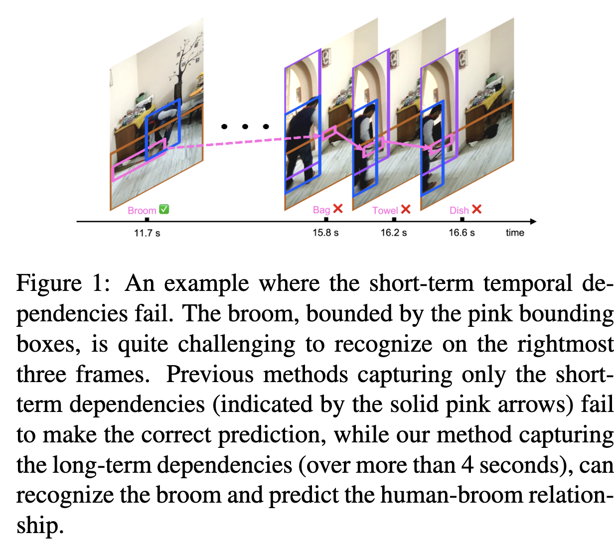
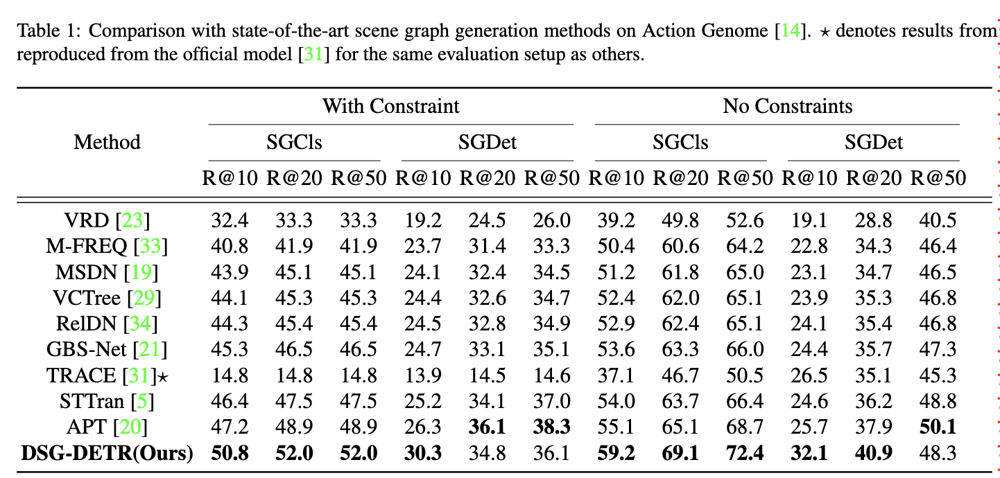

Exploiting Long-Term Dependencies for Generating Dynamic Scene Graphs


Dynamic scene graph generation from a video is challenging due to the temporal dynamics of the scene and the inherent temporal fluctuations of predictions. We hypothe-size that capturing long-term temporal dependencies is the
key to effective generation of dynamic scene graphs. We propose to learn the long-term dependencies in a video by capturing the object-level consistency and inter-object relationship dynamics over object-level long-term tracklets using transformers.
Experimental results demonstrate that our Dynamic Scene Graph Detection Transformer (DSG-DETR) outperforms state-of-the-art methods by a significant margin on the benchmark dataset Action Genome.
Our ablation studies validate the effectiveness of each component of the proposed approach.